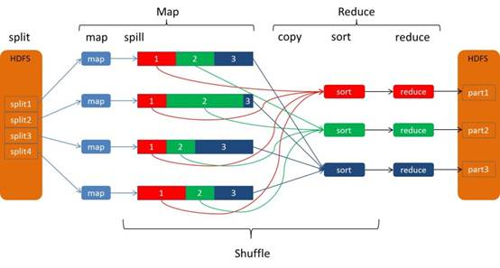
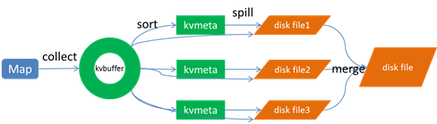
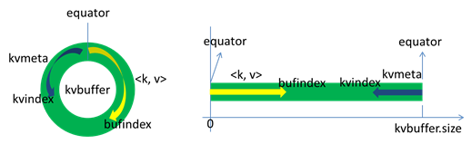
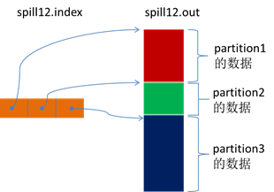
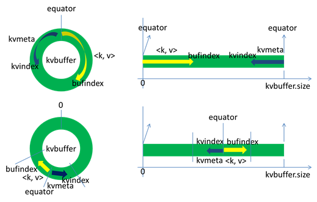
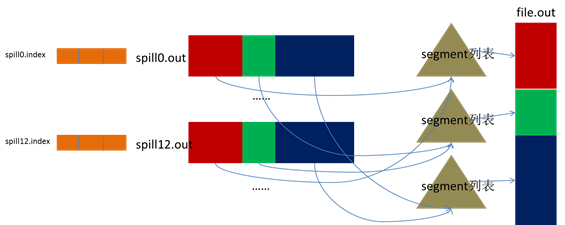
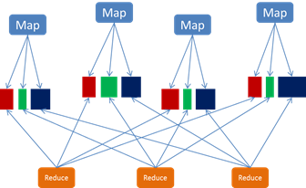
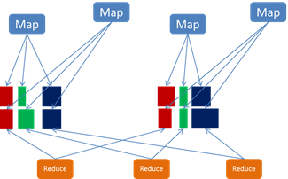

腾讯008TDW计算引擎解析Shuffle
腾讯分布式数据仓库（Tencent distributed Data Warehouse, 简称TDW）基于开源软件Hadoop和Hive进行构建，并且根据公司数据量大、计算复杂等特定情况进行了大量优化和改造，目前单集群最大规模达到5600台，每日作业数达到100多万，已经成为公司最大的离线数据处理平台。为了满足用户更加多样的计算需求，TDW也在向实时化方向发展，为用户提供更加高效、稳定、丰富的服务。
TDW计算引擎包括两部分：一个是偏离线的MapReduce，一个是偏实时的Spark，两者内部都包含了一个重要的过程——Shuffle。本文对shuffle过程进行解析，并对两个计算引擎的shuffle过程进行比较，对后续的优化方向进行思考和探索，期待经过我们不断的努力，TDW计算引擎运行地更好。
Shuffle过程介绍
MapReduce的Shuffle过程介绍
Shuffle的本义是洗牌、混洗，把一组有一定规则的数据尽量转换成一组无规则的数据，越随机越好。MapReduce中的shuffle更像是洗牌的逆过程，把一组无规则的数据尽量转换成一组具有一定规则的数据。
为什么MapReduce计算模型需要shuffle过程？我们都知道MapReduce计算模型一般包括两个重要的阶段：map是映射，负责数据的过滤分发；reduce是规约，负责数据的计算归并。Reduce的数据来源于map，map的输出即是reduce的输入，reduce需要通过shuffle来获取数据。
从map输出到reduce输入的整个过程可以广义地称为shuffle。Shuffle横跨map端和reduce端，在map端包括spill过程，在reduce端包括copy和sort过程，如图所示： 
Spill过程
Spill过程包括输出、排序、溢写、合并等步骤，如图所示： 
Collect
每个Map任务不断地以<key, value>对的形式把数据输出到在内存中构造的一个环形数据结构中。使用环形数据结构是为了更有效地使用内存空间，在内存中放置尽可能多的数据。
这个数据结构其实就是个字节数组，叫kvbuffer，名如其义，但是这里面不光放置了<key, value>数据，还放置了一些索引数据，给放置索引数据的区域起了一个kvmeta的别名，在kvbuffer的一块区域上穿了一个IntBuffer（字节序采用的是平台自身的字节序）的马甲。<key, value>数据区域和索引数据区域在kvbuffer中是相邻不重叠的两个区域，用一个分界点来划分两者，分界点不是亘古不变的，而是每次spill之后都会更新一次。初始的分界点是0，<key, value>数据的存储方向是向上增长，索引数据的存储方向是向下增长，如图所示： 
Kvbuffer的存放指针bufindex是一直闷着头地向上增长，比如bufindex初始值为0，一个Int型的key写完之后，bufindex增长为4，一个Int型的value写完之后，bufindex增长为8。
索引是对<key, value>在kvbuffer中的索引，是个四元组，包括：value的起始位置、key的起始位置、partition值、value的长度，占用四个Int长度，kvmeta的存放指针kvindex每次都是向下跳四个“格子”，然后再向上一个格子一个格子地填充四元组的数据。比如kvindex初始位置是-4，当第一个<key, value>写完之后，(kvindex+0)的位置存放value的起始位置、(kvindex+1)的位置存放key的起始位置、(kvindex+2)的位置存放partition的值、(kvindex+3)的位置存放value的长度，然后kvindex跳到-8位置，等第二个<key, value>和索引写完之后，kvindex跳到-32位置。
Kvbuffer的大小虽然可以通过参数设置，但是总共就那么大，<key, value>和索引不断地增加，加着加着，kvbuffer总有不够用的那天，那怎么办？把数据从内存刷到磁盘上再接着往内存写数据，把kvbuffer中的数据刷到磁盘上的过程就叫spill，多么明了的叫法，内存中的数据满了就自动地spill到具有更大空间的磁盘。 关于spill触发的条件，也就是kvbuffer用到什么程度开始spill，还是要讲究一下的。如果把kvbuffer用得死死得，一点缝都不剩的时候再开始spill，那map任务就需要等spill完成腾出空间之后才能继续写数据；如果kvbuffer只是满到一定程度，比如80%的时候就开始spill，那在spill的同时，map任务还能继续写数据，如果spill够快，map可能都不需要为空闲空间而发愁。两利相衡取其大，一般选择后者。
Spill这个重要的过程是由spill线程承担，spill线程从map任务接到“命令”之后就开始正式干活，干的活叫sortAndSpill，原来不仅仅是spill，在spill之前还有个颇具争议性的sort。
Sort
先把kvbuffer中的数据按照partition值和key两个关键字升序排序，移动的只是索引数据，排序结果是kvmeta中数据按照partition为单位聚集在一起，同一partition内的按照key有序。
Spill
Spill线程为这次spill过程创建一个磁盘文件：从所有的本地目录中轮训查找能存储这么大空间的目录，找到之后在其中创建一个类似于“spill12.out”的文件。Spill线程根据排过序的kvmeta挨个partition的把<key, value>数据吐到这个文件中，一个partition对应的数据吐完之后顺序地吐下个partition，直到把所有的partition遍历完。一个partition在文件中对应的数据也叫段(segment)。
所有的partition对应的数据都放在这个文件里，虽然是顺序存放的，但是怎么直接知道某个partition在这个文件中存放的起始位置呢？强大的索引又出场了。有一个三元组记录某个partition对应的数据在这个文件中的索引：起始位置、原始数据长度、压缩之后的数据长度，一个partition对应一个三元组。然后把这些索引信息存放在内存中，如果内存中放不下了，后续的索引信息就需要写到磁盘文件中了：从所有的本地目录中轮训查找能存储这么大空间的目录，找到之后在其中创建一个类似于“spill12.out.index”的文件，文件中不光存储了索引数据，还存储了crc32的校验数据。(spill12.out.index不一定在磁盘上创建，如果内存（默认1M空间）中能放得下就放在内存中，即使在磁盘上创建了，和spill12.out文件也不一定在同一个目录下。)
每一次spill过程就会最少生成一个out文件，有时还会生成index文件，spill的次数也烙印在文件名中。索引文件和数据文件的对应关系如下图所示： 
话分两端，在spill线程如火如荼的进行sortAndSpill工作的同时，map任务不会因此而停歇，而是一无既往地进行着数据输出。Map还是把数据写到kvbuffer中，那问题就来了：<key, value>只顾着闷头按照bufindex指针向上增长，kvmeta只顾着按照kvindex向下增长，是保持指针起始位置不变继续跑呢，还是另谋它路？如果保持指针起始位置不变，很快bufindex和kvindex就碰头了，碰头之后再重新开始或者移动内存都比较麻烦，不可取。Map取kvbuffer中剩余空间的中间位置，用这个位置设置为新的分界点，bufindex指针移动到这个分界点，kvindex移动到这个分界点的-16位置，然后两者就可以和谐地按照自己既定的轨迹放置数据了，当spill完成，空间腾出之后，不需要做任何改动继续前进。分界点的转换如下图所示：  Map任务总要把输出的数据写到磁盘上，即使输出数据量很小在内存中全部能装得下，在最后也会把数据刷到磁盘上。
Merge
Map任务如果输出数据量很大，可能会进行好几次spill，out文件和index文件会产生很多，分布在不同的磁盘上。最后把这些文件进行合并的merge过程闪亮登场。
Merge过程怎么知道产生的spill文件都在哪了呢？从所有的本地目录上扫描得到产生的spill文件，然后把路径存储在一个数组里。Merge过程又怎么知道spill的索引信息呢？没错，也是从所有的本地目录上扫描得到index文件，然后把索引信息存储在一个列表里。到这里，又遇到了一个值得纳闷的地方。在之前spill过程中的时候为什么不直接把这些信息存储在内存中呢，何必又多了这步扫描的操作？特别是spill的索引数据，之前当内存超限之后就把数据写到磁盘，现在又要从磁盘把这些数据读出来，还是需要装到更多的内存中。之所以多此一举，是因为这时kvbuffer这个内存大户已经不再使用可以回收，有内存空间来装这些数据了。（对于内存空间较大的土豪来说，用内存来省却这两个io步骤还是值得考虑的。）
然后为merge过程创建一个叫file.out的文件和一个叫file.out.index的文件用来存储最终的输出和索引。
一个partition一个partition的进行合并输出。对于某个partition来说，从索引列表中查询这个partition对应的所有索引信息，每个对应一个段插入到段列表中。也就是这个partition对应一个段列表，记录所有的spill文件中对应的这个partition那段数据的文件名、起始位置、长度等等。
然后对这个partition对应的所有的segment进行合并，目标是合并成一个segment。当这个partition对应很多个segment时，会分批地进行合并：先从segment列表中把第一批取出来，以key为关键字放置成最小堆，然后从最小堆中每次取出最小的<key, value>输出到一个临时文件中，这样就把这一批段合并成一个临时的段，把它加回到segment列表中；再从segment列表中把第二批取出来合并输出到一个临时segment，把其加入到列表中；这样往复执行，直到剩下的段是一批，输出到最终的文件中。
最终的索引数据仍然输出到index文件中。  Map端的shuffle过程到此结束。
Copy
Reduce任务通过http向各个map任务拖取它所需要的数据。每个节点都会启动一个常驻的http server，其中一项服务就是响应reduce拖取map数据。当有mapOutput的http请求过来的时候，http server就读取相应的map输出文件中对应这个reduce部分的数据通过网络流输出给reduce。
Reduce任务拖取某个map对应的数据，如果在内存中能放得下这次数据的话就直接把数据写到内存中。Reduce要向每个map去拖取数据，在内存中每个map对应一块数据，当内存中存储的map数据占用空间达到一定程度的时候，开始启动内存中merge，把内存中的数据merge输出到磁盘上一个文件中。
如果在内存中不能放得下这个map的数据的话，直接把map数据写到磁盘上，在本地目录创建一个文件，从http流中读取数据然后写到磁盘，使用的缓存区大小是64K。拖一个map数据过来就会创建一个文件，当文件数量达到一定阈值时，开始启动磁盘文件merge，把这些文件合并输出到一个文件。
有些map的数据较小是可以放在内存中的，有些map的数据较大需要放在磁盘上，这样最后reduce任务拖过来的数据有些放在内存中了有些放在磁盘上，最后会对这些来一个全局合并。
Merge Sort
这里使用的merge和map端使用的merge过程一样。Map的输出数据已经是有序的，merge进行一次合并排序，所谓reduce端的sort过程就是这个合并的过程。一般reduce是一边copy一边sort，即copy和sort两个阶段是重叠而不是完全分开的。
Reduce端的shuffle过程至此结束。
Spark的Shuffle过程介绍
Shuffle Writer
Spark丰富了任务类型，有些任务之间数据流转不需要通过shuffle，但是有些任务之间还是需要通过shuffle来传递数据，比如wide dependency的group by key。
Spark中需要shuffle输出的map任务会为每个reduce创建对应的bucket，map产生的结果会根据设置的partitioner得到对应的bucketId，然后填充到相应的bucket中去。每个map的输出结果可能包含所有的reduce所需要的数据，所以每个map会创建R个bucket（R是reduce的个数），M个map总共会创建M*R个bucket。
Map创建的bucket其实对应磁盘上的一个文件，map的结果写到每个bucket中其实就是写到那个磁盘文件中，这个文件也被称为blockFile，是DiskBlockManager管理器通过文件名的hash值对应到本地目录的子目录中创建的。每个map要在节点上创建R个磁盘文件用于结果输出，map的结果是直接输出到磁盘文件上的，100KB的内存缓冲是用来创建FastBufferedOutputStream输出流。这种方式一个问题就是shuffle文件过多。  针对上述shuffle过程产生的文件过多问题，Spark有另外一种改进的shuffle过程：consolidation shuffle，以期显著减少shuffle文件的数量。在consolidation shuffle中每个bucket并非对应一个文件，而是对应文件中的一个segment部分。Job的map在某个节点上第一次执行，为每个reduce创建bucket对应的输出文件，把这些文件组织成ShuffleFileGroup，当这次map执行完之后，这个ShuffleFileGroup可以释放为下次循环利用；当又有map在这个节点上执行时，不需要创建新的bucket文件，而是在上次的ShuffleFileGroup中取得已经创建的文件继续追加写一个segment；当前次map还没执行完，ShuffleFileGroup还没有释放，这时如果有新的map在这个节点上执行，无法循环利用这个ShuffleFileGroup，而是只能创建新的bucket文件组成新的ShuffleFileGroup来写输出。

比如一个job有3个map和2个reduce：(1) 如果此时集群有3个节点有空槽，每个节点空闲了一个core，则3个map会调度到这3个节点上执行，每个map都会创建2个shuffle文件，总共创建6个shuffle文件；(2) 如果此时集群有2个节点有空槽，每个节点空闲了一个core，则2个map先调度到这2个节点上执行，每个map都会创建2个shuffle文件，然后其中一个节点执行完map之后又调度执行另一个map，则这个map不会创建新的shuffle文件，而是把结果输出追加到之前map创建的shuffle文件中；总共创建4个shuffle文件；(3) 如果此时集群有2个节点有空槽，一个节点有2个空core一个节点有1个空core，则一个节点调度2个map一个节点调度1个map，调度2个map的节点上，一个map创建了shuffle文件，后面的map还是会创建新的shuffle文件，因为上一个map还正在写，它创建的ShuffleFileGroup还没有释放；总共创建6个shuffle文件。
Shuffle Fetcher
Reduce去拖map的输出数据，Spark提供了两套不同的拉取数据框架：通过socket连接去取数据；使用netty框架去取数据。
每个节点的Executor会创建一个BlockManager，其中会创建一个BlockManagerWorker用于响应请求。当reduce的GET_BLOCK的请求过来时，读取本地文件将这个blockId的数据返回给reduce。如果使用的是Netty框架，BlockManager会创建ShuffleSender用于发送shuffle数据。
并不是所有的数据都是通过网络读取，对于在本节点的map数据，reduce直接去磁盘上读取而不再通过网络框架。 Reduce拖过来数据之后以什么方式存储呢？Spark map输出的数据没有经过排序，spark shuffle过来的数据也不会进行排序，spark认为shuffle过程中的排序不是必须的，并不是所有类型的reduce需要的数据都需要排序，强制地进行排序只会增加shuffle的负担。Reduce拖过来的数据会放在一个HashMap中，HashMap中存储的也是<key, value>对，key是map输出的key，map输出对应这个key的所有value组成HashMap的value。Spark将shuffle取过来的每一个<key, value>对插入或者更新到HashMap中，来一个处理一个。HashMap全部放在内存中。
Shuffle取过来的数据全部存放在内存中，对于数据量比较小或者已经在map端做过合并处理的shuffle数据，占用内存空间不会太大，但是对于比如group by key这样的操作，reduce需要得到key对应的所有value，并将这些value组一个数组放在内存中，这样当数据量较大时，就需要较多内存。
当内存不够时，要不就失败，要不就用老办法把内存中的数据移到磁盘上放着。Spark意识到在处理数据规模远远大于内存空间时所带来的不足，引入了一个具有外部排序的方案。Shuffle过来的数据先放在内存中，当内存中存储的<key, value>对超过1000并且内存使用超过70%时，判断节点上可用内存如果还足够，则把内存缓冲区大小翻倍，如果可用内存不再够了，则把内存中的<key, value>对排序然后写到磁盘文件中。最后把内存缓冲区中的数据排序之后和那些磁盘文件组成一个最小堆，每次从最小堆中读取最小的数据，这个和MapReduce中的merge过程类似。
MapReduce和Spark的Shuffle过程对比
| MapReduce | Spark | |
|---|---|---|
| collect | 在内存中构造了一块数据结构用于map输出的缓冲 | 没有在内存中构造一块数据结构用于map输出的缓冲，而是直接把输出写到磁盘文件 |
| sort | map输出的数据有排序 | map输出的数据没有排序 |
| merge | 对磁盘上的多个spill文件最后进行合并成一个输出文件 | 在map端没有merge过程，在输出时直接是对应一个reduce的数据写到一个文件中，这些文件同时存在并发写，最后不需要合并成一个 |
| copy框架 | jetty | netty或者直接socket流 |
| 对于本节点上的文件 | 仍然是通过网络框架拖取数据 | 不通过网络框架，对于在本节点上的map输出文件，采用本地读取的方式 |
| copy过来的数据存放位置 | 先放在内存，内存放不下时写到磁盘 | 一种方式全部放在内存；另一种方式先放在内存 |
| merge sort | 最后会对磁盘文件和内存中的数据进行合并排序 | 对于采用另一种方式时也会有合并排序的过程 |
Shuffle后续优化方向
通过上面的介绍，我们了解到，shuffle过程的主要存储介质是磁盘，尽量的减少io是shuffle的主要优化方向。我们脑海中都有那个经典的存储金字塔体系，shuffle过程为什么把结果都放在磁盘上，那是因为现在内存再大也大不过磁盘，内存就那么大，还这么多张嘴吃，当然是分配给最需要的了。如果具有“土豪”内存节点，减少shuffle io的最有效方式无疑是尽量把数据放在内存中。下面列举一些现在看可以优化的方面，期待经过我们不断的努力，TDW计算引擎运行地更好。
MapReduce Shuffle后续优化方向
- 压缩：对数据进行压缩，减少写读数据量；
- 减少不必要的排序：并不是所有类型的reduce需要的数据都是需要排序的，排序这个nb的过程如果不需要最好还是不要的好；
- 内存化：shuffle的数据不放在磁盘而是尽量放在内存中，除非逼不得已往磁盘上放；当然了如果有性能和内存相当的第三方存储系统，那放在第三方存储系统上也是很好的；这个是个大招；
- 网络框架：netty的性能据说要占优了；
- 本节点上的数据不走网络框架：对于本节点上的map输出，reduce直接去读吧，不需要绕道网络框架。
Spark Shuffle后续优化方向
Spark作为MapReduce的进阶架构，对于shuffle过程已经是优化了的，特别是对于那些具有争议的步骤已经做了优化，但是Spark的shuffle对于我们来说在一些方面还是需要优化的。
- 压缩：对数据进行压缩，减少写读数据量；
- 内存化：Spark历史版本中是有这样设计的：map写数据先把数据全部写到内存中，写完之后再把数据刷到磁盘上；考虑内存是紧缺资源，后来修改成把数据直接写到磁盘了；对于具有较大内存的集群来讲，还是尽量地往内存上写吧，内存放不下了再放磁盘。